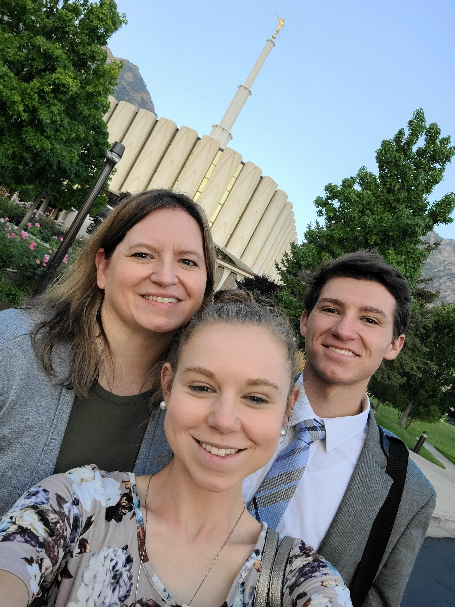
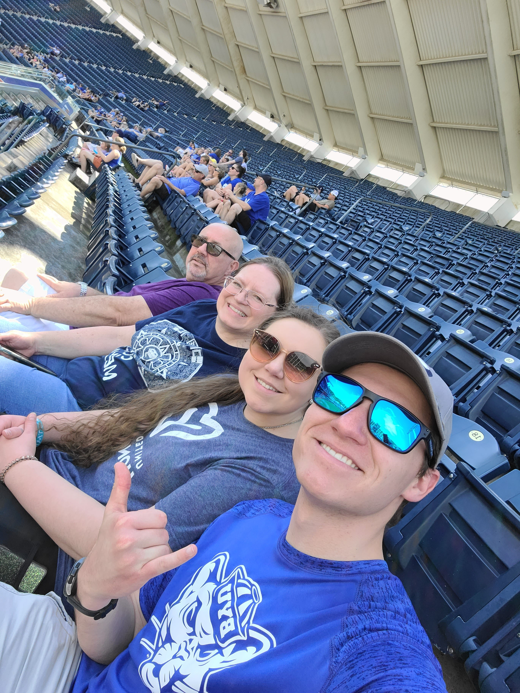

I grew up in a town called Franklin, KY. My whole life I have loved music and sports. I've sung in many choirs over the years and am currently a member of the BYU Men's Chorus. I served a mission in the Texas Houston East Spanish-speaking Mission. I am currently taking pre-business classes at BYU.
"I am crucified with Christ: nevertheless I live; yet not I, but Christ liveth in me: and the life which I now live in the flesh I live ny the faith of the Son of God, who loved me, and gave himself for me." -Galatians 2:20
This verse means a lot to me because it radiates Jesus's love for me and for all of us. It highlights the principle of grace and of being born again. It reminds me that I need to rely on my Savior to help me become a new creature and receive a change of heart so that I can become more like Him.
Below is a picture of me, my sister, Angelina, and my mom, Cindy, in front of the Provo Temple. I've been an ordiance worker there for almost a year now, and it has been an amazing experience for me!
I love my family and am so rateful for everything they have sacrificed for me. They've given me the world, and I'm grateful that families are forever. This is a picture of me at a baseball game with my family: my sister, my mom, and my dad, Ron.
Here is the best video I've seen recently: